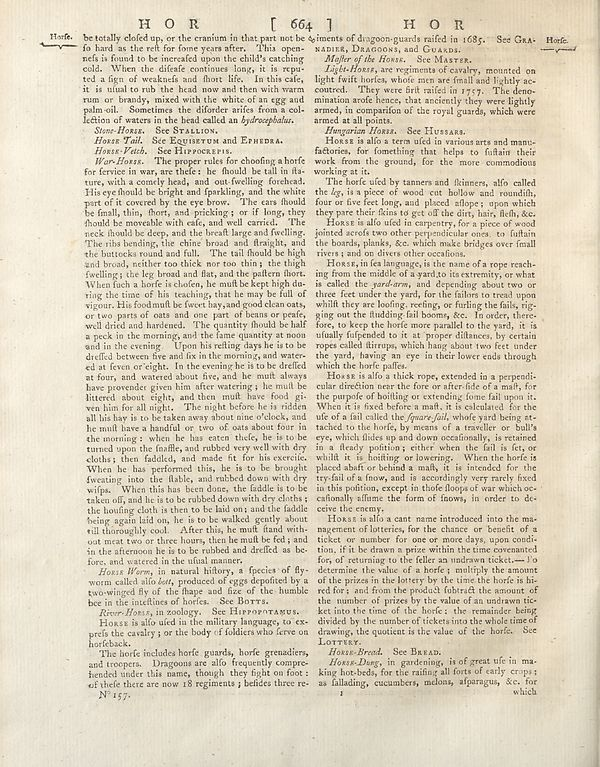

Scan ID britannica:309f765b1ecc83e0a7f7762e44b4a927a7555443:train:1344
Image SHA-256 b5c2505d4784ce9e909dbebeedb4858735d3550cf3e7506a2a92c391393e8cc2
Status: ok. Running header: none (none). Removed page furniture: none.
PDF · raw Parse reply · LaTeX
Entries: E0116 ADIER, DRAGOONS, and GUARDS

| # | Class | Box | Parse 3.5 | Used text | Source |
|---|---|---|---|---|---|
| 0 | Title | [0.2256, 0.0203, 0.7754, 0.0414] | H O R [ 664 ] H O R | H O R [ 664 ] H O R | super_vl |
| 1 | Text | [0.0693, 0.0422, 0.1328, 0.057] | Horfs | Horse. | super_vl |
| 2 | Text | [0.1318, 0.0437, 0.5068, 0.1633] | be totally cled up, or the cranium in that part not be to hard as the rest for four years after. This is made refs is found to be incredied upon the child’s catching cold. When the differdit continuer long, it is repu- ted a drop of webendo and flour life, in this case it is usual to rub the head now and then with warm rum or bowled, mixed with the white one leg against pain oil. Sometimes the different suffer from a col- lection of waters in the head called an _hydrosepholes_. | be totally closed up, or the cranium in that part not be so hard as the rest for some years after. This open- ness is found to be increased upon the child's catching cold. When the disease continues long, it is reput- ed a sign of weakness and short life. In this case, it is usual to rub the head now and then with warm rum or brandy, mixed with the white of an egg and palm-oil. Sometimes the disorder arises from a col- lection of waters in the head called an hydrocephalus. | super_vl |
| 3 | Text | [0.1309, 0.1625, 0.5039, 0.1766] | _Since Horse_ See StylLON. | lection of waters in the head called an hydrocephalus. Stone-Horse. See Stallion. Horse Tail. See Equisetum and Equus. | super_vl · expanded_beyond_parse |
| 4 | Text | [0.1299, 0.1758, 0.4736, 0.1891] | _Horas Tall._ Se Egyptian and EPIRRA. | Stone-Horse. See Stallion. Horse Tail. See Equisetum and Ephedra. Mare's Tail. See Hippuris. | super_vl · expanded_beyond_parse |
| 5 | Text | [0.1514, 0.1898, 0.4746, 0.2039] | _Horas Path._ See Hippocrates. | Horse Tail. See Equisetum and Ephedra. Horse-Vetch. See Hippocrepis. War Horse. The proper rules for shoeing a | super_vl · expanded_beyond_parse |
| 6 | Text | [0.1367, 0.2031, 0.5176, 0.7398] | _Wars Horas._ The proper rules for choosing a horfe for carrier in war, are neither he should be tall in fiat- ture, with a county break, and out-fwelling forecechs His eye should be bright and parbling, and the white part of it covered by the eye brow. The cats should be final, thin, there, and pinkking , or if longer, the should be manhole with rafa, and well carried. The neck should be deep, and the breath large and fewling. The ribs bending, the either bound and flagging, and the buttons round and fall. The tail though be high and broad, neither too thick nor too thin; the thigh wellings; | War-Horse. The proper rules for choosing a horse for service in war, are these: he should be tall in stature, with a comely head, and out-swelling forehead. His eye should be bright and sparkling, and the white part of it covered by the eye brow. The ears should be small, thin, short, and pricking; or if long, they should be moveable with ease, and well carried. The neck should be deep, and the breath large and swelling. The ribs bending, the chine broad and straight, and the buttocks round and full. The tail should be high and broad, neither too thick nor too thin; the thigh swelling; the leg | super_vl |
| 7 | Text | [0.1426, 0.7391, 0.5146, 0.793] | _Horas Wow, in_ natural history, a species of fly- worm called _also lead_, produced e eggs deposited by a two-wing fly of the flop and line of the humble be in the intestines of horses. See Boryss. | Horse Worm, in natural history, a species of fly- worm called also bot, produced of eggs deposited by a two-winged fly of the shape and size of the humble bee in the intestines of horses. See Borrs. | super_vl |
| 8 | Text | [0.1416, 0.7914, 0.5029, 0.8063] | _Rose Horns, in another._ Se El Hyporomans. | River-Horse, in zoology. See HIPPOPOTAMUS. Horse is also used in the military language, to ex- | super_vl · expanded_beyond_parse |
| 9 | Text | [0.1406, 0.807, 0.5156, 0.8445] | Horas is alo old in the military language, to cees pets the country or the body of folders who feevo on horfeback. | Horse is also used in the military language, to ex- press the cavalry; or the body of soldiers who serve on horseback. | super_vl |
| 10 | Text | [0.1436, 0.8453, 0.5059, 0.8992] | The horfe includes horfe guards, hoeře genaudlers, and troopers. Dragoons are allo frequently compro- hended under this name, though they fight on foot: of these there are now 18 regiments ) believes re- No 157. | The horse includes horse guards, horse grenadiers, and troopers. Dragoons are also frequently compre- hended under this name, though they fight on foot: of these there are now 18 regiments ; besides three re- | super_vl |
| 11 | Text | [0.5215, 0.043, 0.8936, 0.0703] | ments of dragon-quards infed in 1682. See Gra- Roors, Dragoons), and Guaxan. | ments of dragoon-guards raised in 1685. See Gra- nadier, Dragoons, and Guards. | super_vl |
| 12 | Text | [0.5439, 0.0688, 0.8008, 0.0852] | _Molter of the Horns._ See Marxer. | ADIER, DRAGOONS, and GUARDS. Master of the Horse. See MASTER. Light Horse, are regiments of cavalry | super_vl · expanded_beyond_parse |
| 13 | Text | [0.5225, 0.0758, 0.8945, 0.1641] | _Light Horns_ are regiments of cavalry mounted on light fruit horches, which may see final and lightly ac- cutout. They were first infed in 1757). The deno- manism and hence, chat anxietly they were lightly armed, in comparison of the royal guards, which were arned at all points. | Light-Horse, are regiments of cavalry, mounted on light swift horses, whose men are small and lightly ac- coutred. They were first raised in 1757. The deno- mination arose hence, that anciently they were lightly armed, in comparison of the royal guards, which were armed at all points. | super_vl |
| 14 | Text | [0.5234, 0.1648, 0.7568, 0.1781] | _Hongangna Horns._ Se El Dorass | Hungarian Horse. See Hussar. | super_vl |
| 15 | Text | [0.5205, 0.1789, 0.8926, 0.2305] | Horse is alo often used its various arts and manu- factories, for fomething that helps to fuflain their work from the ground, for the more commodious working at it. | Horse is also a term used in various arts and manufactories, for something that helps to sustain their work from the ground, for the more commodious working at it. | super_vl |
| 16 | Text | [0.5195, 0.2313, 0.8916, 0.2852] | The horf died by transers and filmmers, alfo called the Ig, ira piece of wood cut hollow and rounds, four or five feet long, and placed slippers upon which they per their dens et get of the dirty hair, flesh,&. | The horse used by tanners and fkinners, also called the leg, is a piece of wood cut hollow and roundish, four or five feet long, and placed alope; upon which they pare their fkins to get off the dirt, hair, flesh, &c. | super_vl |
| 17 | Text | [0.5186, 0.2859, 0.8906, 0.3383] | Horas is alo did not in empery for a price of wood pointed across two other perpendicular ones, to fulain the boards, phunks, so, which make bridges over-final rivers and no divers other conditions. | Horse is also used in carpentry, for a piece of wood joined across two other perpendicular ones, to sustain the boards, planks, &c. which make bridges over small rivers; and on divers other occasions. | super_vl |
| 18 | Text | [0.5195, 0.3391, 0.8955, 0.4844] | Horas, in tea language, is the name of a rope reach- ing from the middle of a yards in its ceremony or what called the _predecessor_, and depending about two or three feet under the yard, for the failors to tread upon which they are holding, resting, holding the fails, op- ing and the fluidizing fall bombs, etc. It orders, therefore, to keep the horfe more parallel to the yard, it is usually fupdated to it at a proper distance, by certain roppes called dirtrops, which hang about two feet under the yard, having my eye in their lower ends through which the horfe place. | Horse, in sea language, is the name of a rope reaching from the middle of a yard to its extremity, or what is called the yard-arm, and depending about two or three feet under the yard, for the sailors to tread upon whilst they are loosing, reefing, or furling the sails, rigging out the studding-sail booms, &c. In order, therefore, to keep the horse more parallel to the yard, it is usually suspended to it at proper distances, by certain ropes called stirrups, which hang about two feet under the yard, having an eye in their lower ends through which the horse passes. | super_vl |
| 19 | Text | [0.5166, 0.4852, 0.8965, 0.6703] | Horos is alo a thick rope, extended in a perpendli- line direction near east four or after field at each if, the poprue of boiling or extending force fall upon it. When it is fixed before a mafts, it is calculated for the use of a fall called the former folkl, whole you'd being ex- tached to the horfe, by means of a rareclier or bull's eye, which chips and down occasionally, is retained in a likely position where when the fail is fet, or whilst it is holding or lowering. When the horfe is places itself or behind a mafts, it is intended for the crystal of a few, and is according to party fixed | Horse is also a thick rope, extended in a perpendicular direction near the fore or after-side of a mast, for the purpose of hoisting or extending some fail upon it. When it is fixed before a mast, it is calculated for the use of a fail called the square-fail, whose yard being attached to the horse, by means of a traveller or bull's eye, which slides up and down occasionally, is retained in a steady position; either when the fail is set, or whilst it is hoisting or lowering. When the horse is placed abaft or behind a mast, it is intended for the try-fail of a snow, and is accordingly very rarel | super_vl |
| 20 | Text | [0.5176, 0.6711, 0.8975, 0.843] | Horos is alo a cant name introduced into the mas- agement of batteries, the chance or benefit of a ticket or number for one or more days, soon consider tion, if it be drawn a prize within the time ceremonies for, of returning to the false or unidrawn tickets—To determine the value of a horfe ) multiply the amount of the prizes in the lottery by the time the horfe is ha- red for, and from the product fabricated the amount of the number of prizes by the value of an undrawn tic- ket into the time of the horfe., the remaining being divided by the number of tickets onto the whole time of drawing, t | Horse is also a cant name introduced into the management of lotteries, for the chance or benefit of a ticket or number for one or more days, upon condition, if it be drawn a prize within the time covenanted for, of returning to the seller an undrawn ticket.—To determine the value of a horse; multiply the amount of the prizes in the lottery by the time the horse is hired for; and from the product subtract the amount of the number of prizes by the value of an undrawn ticket into the time of the horse; the remainder being divided by the number of tickets into the whole time of drawing, the quotie | super_vl |
| 21 | Text | [0.5459, 0.8484, 0.8984, 0.8562] | _Horas-Bread._ See Barxad. | _Horas-Bread._ See Barxad. | parse_fallback · box_too_small |
| 22 | Text | [0.5449, 0.8492, 0.8994, 0.9078] | _Horas-Dang_ in gardening, is o great ufc in ma- king hot-beds, for the rafting all sorts of early crops as fishing, cucumbers melons, afparagus, &c, for which | Horse-Bread. See BREAD. Horse-Dung, in gardening, is of great use in ma- king hot-beds, for the raising all sorts of early crops; as fallading, cucumbers, melons, asparagus, &c. for which | super_vl |
Britannica scans: National Library of Scotland, CC0 1.0. Wikipedia text: Wikipedia contributors, CC BY-SA 4.0, revision links on each page. Generated 2026-10-18T13:26:14+00:00.